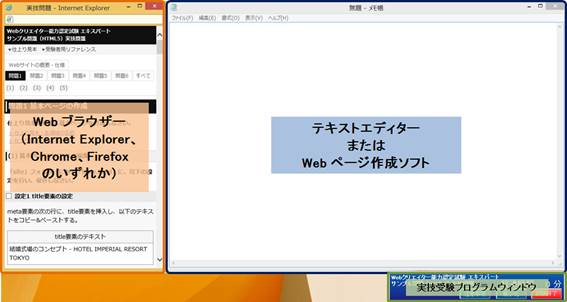

|
実技問題を解答するにあたり、以下の注意事項に留意してください。また、各ウィンドウの配置は、以下の推奨画面レイアウトを参考に配置してください。 |
|
注意事項 |
|
推奨画面レイアウト |
|
●実技問題では、Webブラウザー（Internet Explorer、Chrome、Firefoxのいずれか）、テキストエディターまたはWebページ作成ソフト、実技受験プログラムウィンドウの三つのウィンドウを同時に表示させておきます。 |
|
●推奨する画面のレイアウトは下図の通りです。 |

＜推奨画面レイアウト＞
|
●Webブラウザーと、テキストエディターまたはWebページ作成ソフトのウィンドウは、ドラッグすることにより位置や大きさを調整することができます。また、実技受験プログラムウィンドウについても、ウィンドウをドラッグすることにより位置を変更することができます。 |
|
●実技問題操作練習を行う際に、レイアウトを自由に設定できます。 |